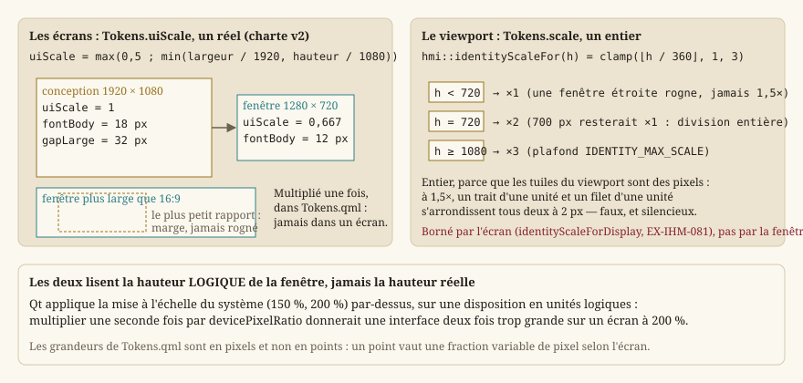

Système de design et architecture de l'information
Statut : refondu au
LOT-EDITOR-01. Cette page décrivait le système de design du châssis d'édition — jetons, thème clair/sombre, feuille de style, icônes tracées, catalogue d'actions. L'éditeur est devenu un outil interne : tout cela en est sorti. Restent ici la répartition de l'information dans l'éditeur et la règle d'échelle des écrans du jeu.Les jetons du jeu vivent dans
Source/Ui/Theme/Tokens.qml, écrits à la main et possédés par la conception — voir Concevoir les écrans dans Qt Design Studio. Le socle applicatif est en IHM Qt — deux applications, deux technologies.
L'éditeur : un outil, pas un produit
Un système de design coûte : chaque widget ajouté doit y entrer, chaque jeton tenir dans deux thèmes, chaque icône être tracée. L'éditeur ne sert qu'à l'auteur, et on le juge sur une seule question — une carte se fait-elle vite et juste ? Depuis le LOT-EDITOR-01 :
- Style Fusion de Qt, choisi avant tout widget (
App/Editor/Main.cpp). Il dessine pareil sur tout poste et suit le schéma clair ou sombre du système : le menu « Thème » est parti avecEX-IHM-054. - Icônes standard du style (
QStyle::standardIcon) quand il en a une, libellé texte sinon. - Textes anglais écrits dans le code, sans catalogue de traduction.
- Widgets construits en code, sans formulaire
.ui: chaque panneau garde ses widgets dans unestruct Widgetsprivée, construite dans son.cpp. - Une commande, une
QAction(hmi::EditorActions) : la même dans la barre d'outils, le menu et son raccourci remappable. La barre ne porte que les outils et les commandes d'usage continu (enregistrer, essayer, annuler, refaire) ; le reste vit au menu.
Architecture de l'information : ce qui informe reste, ce qui commande est unique
Ces choix ne sont plus des exigences (EX-IHM-060 et 061 sont retirées au LOT-EDITOR-01 : l'agencement de l'éditeur se décide lot par lot), mais ils restent en place.
Une barre d'état structurée
hmi::editorStatusLines (Editor/Logic/EditorStatus.h) est une fonction pure qui décide du contenu de cinq zones permanentes : carte ouverte, modifications non enregistrées, outil actif, case survolée, zoom. Ces zones sont ajoutées par addPermanentWidget : un message transitoire ne peut donc pas les recouvrir. L'aide contextuelle à l'outil actif se restaure automatiquement à l'expiration du message (MainWindow::refreshStatusHelp, minuteur unique).
La zone « Modified » suit le contenu (EX-EDIT-058) : elle compare la révision du brouillon (core::LevelDraft::revision) à celle de la dernière ouverture ou du dernier enregistrement. Défaire jusqu'à l'état enregistré l'éteint.
Des panneaux groupés, et qui suivent l'outil
Les panneaux sont regroupés en onglets par défaut (tabifyDockWidget), chacun restant individuellement déplaçable, détachable et refermable. hmi::panelForTool est une table pure qui dit quel panneau mettre en avant pour un outil donné.
La mise en avant n'est jamais un masquage, et elle cède dès que l'utilisateur a imposé son choix (onglet sélectionné à la main, panneau déplacé). La disposition est persistée et versionnée (LAYOUT_VERSION, EX-IHM-011) : une redistribution des docks incrémente la version, ce qui invalide les dispositions antérieures.
Un état, un contrôle
EX-IHM-062 interdit qu'un même état ou une même commande soit exposé à deux endroits. Le menu View porte en tête les seules commandes de vue (recadrer, grille), et chaque panneau n'y a qu'une entrée, sa bascule de visibilité ; Undo/Redo/Copy/Paste dispatchent via hmi::EditContextTarget, interface qu'implémente hmi::EditorViewport.
Deux échelles, et pourquoi l'une est réelle et l'autre entière
C'est le point de cette page qui se retient le plus mal, parce que le mot « échelle » y désigne deux mécanismes différents, réglés séparément, dans le même fichier Source/Ui/Theme/Tokens.qml.
Tokens.uiScale | Tokens.scale | |
|---|---|---|
| Type | réel | entier, borné à [1, 3] |
| Ce qu'il met à l'échelle | les écrans : typographie, espacements, traits | le viewport de la scène |
| Valeur de conception | 1 (Qt Design Studio dessine à 1080p) | 2 (ce qu'affiche Qt Design Studio) |
| Calculé par | Main.qml, depuis la taille de la fenêtre | hmi::identityScaleFor, depuis sa hauteur |
{kind=link}

Tokens.uiScale : réel, parce que la charte v2 est peinte
Les grandeurs des écrans sont écrites à 1080p — fontBody: 18, gapLarge: 32 — puis multipliées une seule fois, ici, par uiScale. Un écran ne multiplie jamais lui-même : c'est ce qui permet de dessiner dans Qt Design Studio à uiScale = 1 et d'y lire les tailles exactes.
Le facteur vaut le plus petit des deux rapports de la fenêtre à 1920 × 1080, avec un plancher à 0,5. Le plus petit, et non le plus grand : sur une fenêtre plus large que 16:9, prendre le rapport de largeur ferait déborder l'interface en hauteur. Mieux vaut une marge qu'un rognage — une marge se voit et ne coûte rien, un bord rogné emporte une valeur ou un bouton.
Il est réel parce que la charte v2 est peinte et anticrénelée : ses cadres 9-patch s'échantillonnent à n'importe quel facteur. La contrainte d'entier qui valait pour le pixel art n'a plus d'objet ici.
Tokens.scale : entier, parce que le viewport est fait de pixels
Le viewport, lui, garde un facteur entier, et ce n'est pas une survivance : ses tuiles sont des pixels. À 1,5×, un trait d'une unité et un filet d'une unité s'arrondissent tous deux à 2 px — la réserve qui les séparait disparaît, et l'encadrement se lit comme une bordure épaisse. Le résultat ne serait pas flou : il serait faux, et silencieux.
hmi::identityScaleFor(hauteur) divise la hauteur par 360, en division entière, puis borne à IDENTITY_MAX_SCALE (3). La division entière et non un arrondi : une fenêtre de 700 px passerait sinon à l'échelle 2, pour laquelle il manque 20 px, et la dernière entrée d'un menu disparaîtrait sous le bord.
Ce que les deux partagent : la hauteur logique
Toutes deux lisent la hauteur logique de la fenêtre, jamais la hauteur réelle. Qt applique déjà la mise à l'échelle du système (150 %, 200 %) par-dessus une disposition exprimée en unités logiques : multiplier une seconde fois par le rapport de pixels du périphérique donnerait une interface deux fois trop grande sur un écran réglé à 200 %.
Pour la même raison, les grandeurs de Tokens.qml sont en pixels et non en points : un point vaut une fraction variable de pixel selon l'écran, et un facteur entier appliqué à une grandeur variable n'aurait plus rien d'entier.
La boucle que le facteur entier a failli créer
Le facteur du viewport se borne à l'écran, pas à la fenêtre (EX-IHM-081, hmi::identityScaleForDisplay). Le dériver de la seule hauteur de fenêtre en faisait une boucle sans point fixe : le facteur grossit les grandeurs d'habillage, qui grossissent la taille minimale des écrans, qui grossit la fenêtre — laquelle relance le calcul un cran plus haut, sans que rien ne redescende jamais. La zone d'affichage disponible, elle, ne dépend d'aucune décision de l'application : c'est ce qui ferme la boucle.
Voir aussi
- IHM Qt — deux applications, deux technologies — le socle applicatif Qt, les surfaces de rendu QRhi, la boucle et les entrées.
- Éditeur de niveaux — l'éditeur de cartes lui-même (brouillon, outils, essai immédiat, reprise).
- Spécification IHM — le quoi/pourquoi.